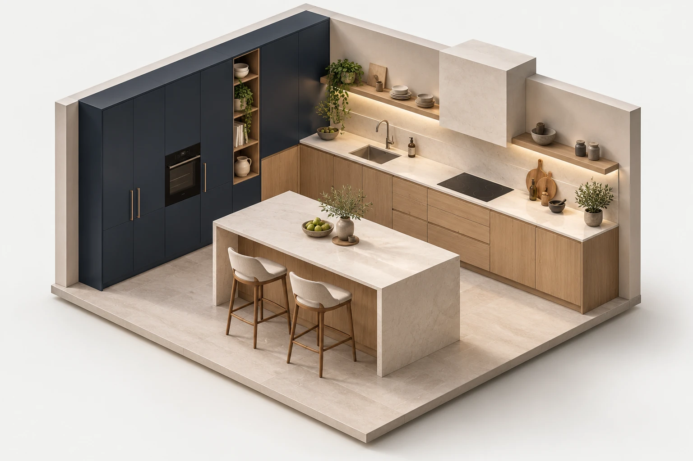
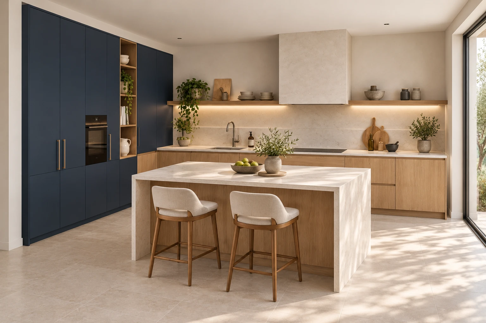

Bucaramanga / Diseño & mobiliarioTu idea.
Tu idea.
Otra
dimensión.
Del primer trazo al espacio
que imaginabas.

Distribuir
Organizar
X — ESPACIOY — POSIBILIDADESLCA / ESTUDIO 01VISTA AXONOMÉTRICA
01 / Pensar antes de construirUn buen espacio
Un buen espacio
empieza en el plano.
Distribución, volumen y detalles.
Tres maneras de mirar una misma idea.

02
Entender el volumen.
Ver cómo conviven la cocina, el almacenamiento y la circulación.
02 / Diseño que se usaCada decisión
Cada decisión
tiene su lugar.
01 / ALMACENAMIENTOTodo encuentra
Explora los puntos · Visualización conceptualTodo encuentra
su sitio.
Pensar qué guardas ayuda a definir módulos, alturas y accesos.
↗
Tu espacio es el siguiente punto de partidaTrae tu idea.
Empecemos a dibujar.
01 · Nos cuentas qué necesitas02 · Coordinamos la valoración03 · Revisamos diseño y alcance